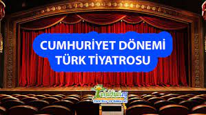

CUMHURİYET DÖNEMİNDE TİYATRO
- Cumhuriyet Dönemi’nde Türk tiyatrosu, Millî Edebiyat Dönemi‘nde başlayan gelişimini devam ettirmiş, daha güçiü bir yapıya kavuşmuştur.
- İstanbul’dan sonra Ankara’da da Devlet Konservatuvarının açılması, Anadolu’da tiyatronun gelişimini hızlandırmıştır.
- Özellikle Muhsin Ertuğrul’un Şehir Tiyatroları açma girişimleri, Türk tiyatrosunun gelişimine olumlu katkı sağlamıştır.
- Cumhuriyet Dönemi’nde tiyatro, yeni Cumhuriyet’in ilkelerini halka aktarmada bir araç olarak hızla yaygınlaşmaya başlamıştır.
- Bu dönemde çocuk tiyatrosu çalışmaları yapılmış, kadınlar sahnede daha çok yer almaya başlamış, devlet konservatuvarı açılmıştır.
- Sade, açık bir dille nazım, nesir karışık olarak tiyatrolar yazılmıştır.
- Geleneksel tiyatroyla (Karagöz, orta oyunu vs.) modern tiyatronun özelliklerinin bir arada görüldüğü eserler ortaya konmuştur.
- Bireysel duygu ve düşünceler de sosyal kuramlardaki değişimler de tiyatrolarda sahnelenmiştir.
- Cumhuriyet Dönemi’ndeki ilke ve inkılapların sonucunda akılcı ve bilimin öne çıktığı eserler yazılmıştır.
- Bu dönemde epik tiyatro ve absürd tiyatro türlerinden de yararlanılmıştır.
- Cumhuriyet Dönemi’nin ilk yıllarında oyun yazarları daha çok Türk tarihi ve efsanelerine yönelmiş, milliyetçiliği halka benimseten düşünceler üzerinde durmuşlar, toplumsal sorunları, değer yargılarının bozulmasını ve ağırlıklı olarak da ruhsal çelişkileri vermeye çalışmışlardır.
- Oyunlarında, kişilerdeki ruhsal çatışmayı ilk ele alan yazarlardan biri, hecenin beş şairinden biri olan Halit Fahri Ozansoy’dur. Sanatçı, Sönen Kandiller adlı oyununda bir yandan aşırı duygulu, heyecanlı, bunalımları olan kişileri incelerken bir yandan da bu durumda oluşlarının nedenlerini psikolojik yönden açıklamaya çalışır. Vedat Nedim (Tör), Necip Fazıl Kısakürek, Nâzım Hikmet Ran da kişilerdeki ruhsal bunalım ve çatışmaların değişik nedenleri üzerinde durmuştur.
- Bu dönemde sanatçılar, toplumumuzdaki değer yargılarının değişmesi sonucu ortaya çıkan sorunlarla da ilgilenmişlerdir. Üzerinde en çok durulan konulardan biri, yüzeyde kalan, taklitçilikten öteye geçmeyen Batılılaşma, bu yüzden kişilerin bayağılaşması; bir diğeri de sermaye gücünün, toplumun çeşitli kurumlarını ve insanları olumsuz yönde değiştirmesidir. Oyunların bir bölümünde yanlış Batılılaşmanın ortaya çıkardığı sorunlar sergilenirken bir bölümünde de gerçek Batı uygarlığının nasıl anlaşılması gerektiği ortaya konmuştur. Yukarıda adı geçen sanatçılarla birlikte İsmail Hakkı Baltacıoğlu, Reşat Nuri Güntekin, Sabahattin Ali, Nahit Sırrı bu konularda eser kaleme almıştır.
- Cumhuriyetin ilk yıllarında ulusçuluk yönü ağır basan idealist oyunlar yazılmıştır. 1930’lu yıllarda OsmanlI İmparatorluğu’nun yıkılış nedenleri, Anadolu’daki uyanış, mitoloji ve evrensel konular işlenmiştir. 1940’lı yıllarda aile yapısı, idealizm ile paranın gücü arasındaki çatışmalar ele alınmıştır.
- 1950-1970’li yıllarda yazar sayısı artmıştır. Buna bağlı olarak konular da çeşitlenmiştir. Kimi yazarlar birey sorunlarından toplumsal sorunlara geçiş yaparken kimi yazarlar toplumsal sorunlardan kişiye inmiş, kimileri de evrensel sorunları ele almıştır. Eğitim ve sorunları ön plana çıkmış, kuşaklar arası, ‘kentli köylü arası eğitim farkından doğan çatışmalar işlenmiştir. Ebeveyn-çocuk, kadın-erkek, ağa-köylü, imam-muhtar-öğretmen ilişkileri işlenmiştir. Böylece toplumdaki bozuklukların temelinde bireyin bilinçsizliğinin yattığı, bilinçli olanların da sorumluluktan kaçtığı vurgulanmıştır.
- 1970’ten sonra 12 Mart olayı buna bağlı olarak Türk tarihini yeniden gözden geçirme, işçi sorunları, Almanya’ya gidenlerin kültür çatışmaları, Almanya’da yetişmekte olan birinci, ikinci kuşak sorunları işlenmiştir.
Cumhuriyet Dönemi Tiyatro Yazarları
- Muhsin Ertuğrul
- Necati Cumalı
- Güngör Dilmen
- Cevat Fehmi Başkut
- Haldun Taner
- Turgut Özakman
- Refik Erduran
- Orhan Asena
- A.Turan Oflazoğlu
- Recep Bilginer
- Başar Sabuncu
- Cahit Atay …